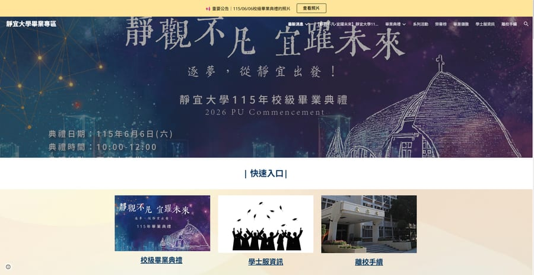

訂車平台
從電話預約到線上訂車
Eswatini 的一家私人運輸公司，由老闆一人經營超過十年。客戶——主要是觀光客與商務出差旅客——多半透過口碑介紹，訂車必須直接聯繫老闆本人。沒有網站，新的國際旅客如果沒有他的聯絡方式，根本無從得知或預約這項服務。我正在打造一個輕量訂車網站：清楚的服務介紹、詢問表單，以及讓旅客不需要事先知道聯絡方式就能開啟 WhatsApp 對話的入口。
詢問這個專案資訊管理 × AI 輔助開發
找出真正讓你流失客戶的原因——那才是我做的事。
專為那些正因數位體驗問題而悄悄流失客戶的中小企業所設計。
 這是我
這是我
我讀資訊管理，會做前端、後端、App，最近也開始用 AI 輔助開發。我有跨國、跨文化的經驗，做每個專案前我都先問一個問題：這個生意到底卡在哪裡？這才是我真正想解決的事。
每個專案都從同一個問題開始：我不會問「你需要什麼網站？」而是問「你到底正在因為什麼而流失客戶、時間，或收入？」這個問題決定了接下來的每一步——直到最後才輪到技術，而不是從技術開始。
豐聯資訊 專案助理 — 使用 Vue、TypeScript、Nuxt 開發肥料電商平台前台。
銀河英語學校 英文老師 — 為國小學生設計互動式英語課程。
靜宜大學資訊管理學系 程式設計助教 — 指導大一學生 Java 程式設計與演算法。
Eswatini 的一家私人運輸公司，由老闆一人經營超過十年。客戶——主要是觀光客與商務出差旅客——多半透過口碑介紹，訂車必須直接聯繫老闆本人。沒有網站，新的國際旅客如果沒有他的聯絡方式，根本無從得知或預約這項服務。我正在打造一個輕量訂車網站：清楚的服務介紹、詢問表單，以及讓旅客不需要事先知道聯絡方式就能開啟 WhatsApp 對話的入口。
詢問這個專案
一所公立大學需要一個地方，讓畢業生、家長、師長都能找到畢業季的所有資訊——典禮時間地點、學士服租借、離校手續、榮譽榜。我獨自規劃、建置、上線整個網站，把三種不同讀者、不同需求的資訊整理成一個清楚的架構。
查看網站更多案例進行中
檢視你的網站、訂購流程與客戶旅程，找出你正在流失客戶的確切環節，以及該優先修哪裡。
網站、訂購工具、或客戶入口網站——無論哪一種能解決你的問題，都會依照你的商業需求打造，而不是套模板。
把經營中重複性的工作自動化，例如客戶詢問或訂單確認，讓你少花時間在人工往返溝通上。
不管是一個小問題，還是一整個專案，用你覺得最方便的方式聯繫我都可以。